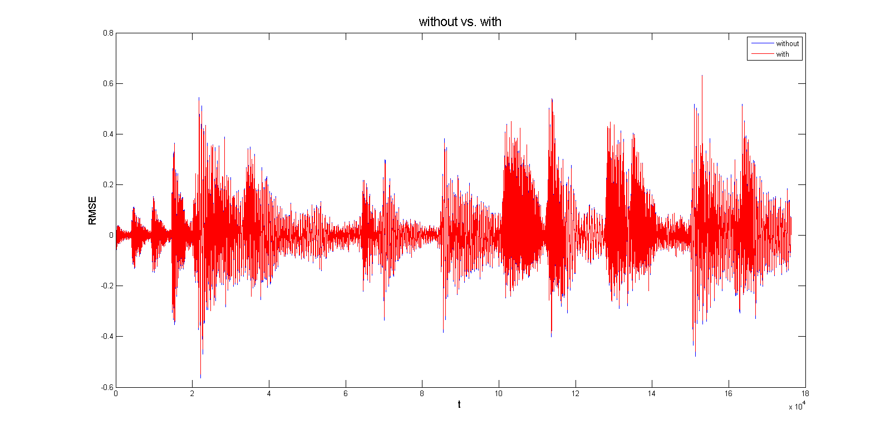

The rows of the n x 2n MDCT matrix M represent the length 2n fundamental interpolation functions.
The i th row is
for j = 0, 1, ... , 2n-1.
Thus the first row traverses a length pi interval, one-half period of cosine; the second row traverse 3/2 periods, and so on.
In the following problems, we will analyze a signal of frequency 64 Hz, given a sampling rate of Fs = 2^13.
The equation used for this analysis is
In order to investigate the ability of MDCT to represent pure tones with a fixed number of bits, 4 bits per window of size n = 32 was used.
Tones of frequency were set as multiples of 64 (=64f, f is an integer).
The figure shows graphs of original with reconstructed sound from MDCT with different 'f' values.
Note that graphs with odd values of 'f' show the better result.
The figure shows RMSE between original sound and reconstructed one.
As seen in problem 1, RMSE gets larger when 'f' is an odd integer.
We are going to apply a "windowing function."
This function scales the input signal x smoothly to zero at each end of the window.
A common choice is to replace x_i with x_i*h_i, where
for a length 2n window, where i = 1,2, ... , 2n.
Then, before you combine windows into the decoded signal, multiply the second half of the h_i to w_2 and the first half to w_3.
Note that the reconstructed audio using a windowing function shows a better result with an even integer of 'f.'
| f | Without windowing function | With windowing function |
| 1 | 0.024355974980366 | 0.049835042561765 |
| 2 | 0.155953425494063 | 0.039083653077519 |
| 3 | 0.010817826638199 | 0.066884453634951 |
| 4 | 0.161856766307043 | 0.072180643197367 |
| 5 | 0.035270010824617 | 0.066675892346141 |
| 6 | 0.156459028809657 | 0.027193369087236 |
| 7 | 0.012341872806899 | 0.071579002611762 |
| 8 | 0.146313093963032 | 0.017695100476299 |
| 9 | 0.026053302489036 | 0.058258978773738 |
| 10 | 0.157160723995047 | 0.068598198840078 |
In this problem, a new audio was made by combining 3 different values of 'f.'
Using same equation used in previous problems, the 'f' values used are 5/3, 3/2, 2/1.
When b = 3
When b = 8
When b = 16

Original
Sauer, T. Numerical Analysis 2nd ed. Pearson